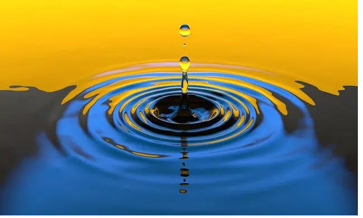
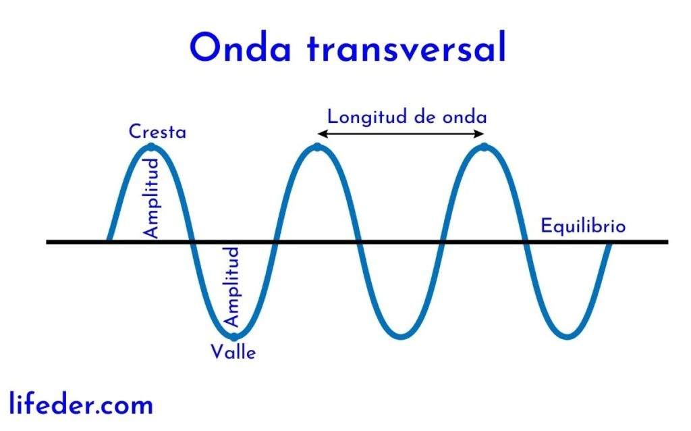

Movimiento ondulatorio
Ciencia:
Proceso por el que se propaga energía de un lugar a otro sin transferencia de materia, mediante ondas mecánicas o electromagnéticas. En cualquier punto de la trayectoria depropagación se produce un desplazamiento periódico, u oscilación, alrededor de una posición de equilibrio Puede ser una oscilación de moléculas de aire, como en el caso del sonido que viaja por la atmósfera, de moléculas de agua (como en las olas que se forman en la superficie del mar) o de porciones de una cuerda o un resorte.En todos estos casos, las partículas oscilan en torno a su posición de equilibrio y sólo la energía avanza de forma continua. Estas ondas se denominan mecánicas porque la energía se transmite a través de un medio material, sin ningún movimiento global del propio medio.

Clasificacion de Ondas
Según la dimensión de propagación las ondas pueden ser: unidimensionales, bidimensionales y tridimensionales. Ondas unidimensionales: las que se propagan en una sola dimensión. Por ejemplo: al contraer y expandir un resorte.
Ondas bidimensionales: las que se propagan en dos dimensiones. Por ejemplo: las que se forman al golpear la superficie del agua.
Ondas tridimensionales: las que se propagan en tres dimensiones. Por ejemplo: la luz. Teniendo en cuenta la dirección de vibración las ondas son: longitudinales o transversales.
Ondas longitudinales: son aquellas cuyas partículas vibran en la misma dirección de la propagación.
Ondas transversales: las partículas vibran perpendicularmente a la dirección de la propagación.
Partes de la onda
Ondas:• Cresta: la parte más alta de la onda.
• Valle: la parte más baja de la onda.
• Nodo: El lugar donde se cruza la onda con la línea de equilibrio.
• Ciclo: Porción de onda que corresponde a una longitud de onda. Por ende, una onda es una serie de muchos ciclos.
• Línea de equilibrio; línea donde se encuentran todas las partículas del medio en “reposo
• Longitud de onda ( λ ): Largo de la onda, distancia en la que cumple un ciclo. Distancia entre 2 crestas (o valles) consecutivas. En el S.I. se mide en m.
• Amplitud (A): Altura máxima de la cresta de la onda
• Periodo (T): Tiempo que demora en cumplir un ciclo. También se puede definir como el tiempo necesario para que una onda recorra una distancia igual a la longitud de onda. En el S.I. se mide en segundos (s)
• Frecuencia (f): Razón entre los ciclos realizados respecto a un tiempo determinado.
• Rapidez de propagación (v): Distancia que recorre la onda en un tiempo determinado.

Subir
Propiedades de las Ondas
Reflexion:
Es el cambio de dirección que experimenta ésta cuando choca contra una superficie lisa y pulimentada
sin cambiar de medio de propagación. Si la reflexión se produce sobre una superficie rugosa, la onda
se refleja en todas direcciones y se llama difusión.
Refraccion:
Es el cambio de dirección que experimenta una onda al pasar de un medio material a otro. Sólo se produce
si la onda incide oblicuamente sobre la superficie de separación de los dos medios y si éstos tienen
índices de refracción distintos.
Difracción:
La difracción se refiere a los fenómenos que ocurren cuando una onda es dispersada por un objeto, lo
que da lugar a un espectro de interferencia de máximos y mínimos de intensidad. Las ondas pueden ser
de luz, de rayos X, de electrones, etc.
Polarización:
La polarización electromagnética es una propiedad de las ondas que pueden oscilar con más de una orientación.Esto se refiere normalmente a las llamadas ondas transversales, en particular se suele hablar de las ondas electromagnéticas, aunque también se puede dar en ondas mecánicas transversales.
Absorción:
El fenómeno por el cual su intensidad disminuye debido a los efectos disipativos del medio de
propagación que provocan la reducción de la energía que transporta.
Disperción:
Dispersión al fenómeno de separación de las ondas de distinta frecuencia al atravesar un material.
Interferencia:
Fenómeno en el que dos o más ondas se superponen para formar una onda resultante de mayor, menor o
igual amplitud. El efecto de interferencia puede ser observado en todos los tipos de onda, como ondas
de luz, radio, sonido, entre otros.
Superposisción de las Ondas
La presencia de una perturbación ondulatoria en una región del espacio no excluye que otras perturbaciones puedan propagarse en la misma región; en los casos en los que esto ocurre ¿Cuál será la perturbación resultante de la superposición de estas perturbaciones?. Desde el punto de vista matemático el hecho que la ecuación diferencial de la onda sea lineal nos garantiza que la ecuación horaria de la perturbación resultante es simplemente la suma algebraica de las ecuaciones horarias de las perturbaciones que actúan simultáneamente.

Velocidad de propagación de las Ondas
Se puede medir como el tiempo que transcurre desde que es emitida hasta que se recibe. Todas las ondas electromagnéticas se propagan en el vacío a una velocidad constante de 300.000.000 m/s, la velocidad de la luz.
EJEMPLO:
Un foco genera ondas de 2 mm de amplitud con una frecuencia de 250 Hz, que se propagan por un medio con una velocidad de 250 m/s. Determina el periodo y la longitud de onda de la perturbación.